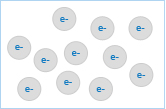

Shower for healthy skin with negative ion,
Water saving micro stream spray.....
Formation
Features and Effects
- 1. Vitamin C added
- Remaining Chlorine removal and skin moisturizing effect
- 2. Collagen added
- Smooth effect
- 3. Ceramic ball equipped
- Deoxidation function / Antibacterial effect / Deodorizing effect /
The effect of far Infrared rays / Anion generation / Fatigue relief / Smooth metabolism and sterilizing function
- 4. Micro-pore discharge port
- Maximized anion generation / Water-saving effect
- 5. Fabric filter
- Elimination of floating matters such as the sand and rust in the source water
- 6. Simple replacement
- Vitamin C + Collagen filter, Ceramic ball, and fabric filter
Function matrix
Function matrix
|
Main material |
Heat-Resisting PC |
| Usable Water Pressure / Temperature |
0.7~7.5kgf / ㎠ / 0~70℃ |
| Product Specification |
62.0(W)X53.0(D)X240.0(H) |
| Shower Plate Structure |
Micro-Pore Plate |
| Total Number of Shower Plate Holes |
Φ 0.20 / 412 EA |
| Cartridge Structure |
Revolving Cartridge Structure |
| Vitamin Filter / Replacement Period |
50g / 7,000ℓ |
| Type of Fragrance |
Rosemary / Lavender / Pine Needles |
| Pre Filter / Replacement Period |
Φ 26 X 19mm / 1~2 Month |
| Ceramic Filter / Replacement Period |
30g / Semi-Permanent |
Water and skin
- The content of water decreases from the deep skin to the outer skin in terms of the region of the skin.
- Horny layer contains the water of 15%, protein of 70%, and fat of 15%. On the other hand, the horny generation cell contains the water of 70%, protein of 15%, and fat of 5%.
Micro-pore Discharge Port
- Stream effect by micro-port discharge port
- It makes the discharge port of the shower head to the micro-pore and so make the small water molecule like the waterfall and maximizes the anion generation.
- Water-saving effect ( 65% )
- Detection of large Negative Ions (approx. 500,000/cc)
- Maximized skin massage effect by minimizing water molecule
- Skin moisturizing effect by small water molecule
- Skin moisturizing effect by small water molecule.
- Helps the skin lifting .
- Helps the make-up .
- Prevents dandruff and baldness.
- Ensures a smooth hair.
- Helps the pimple removal .
- Good for itchy and allergy sensitive skin.
- Decreases the skin tugging after the bath, shower bath and face wash.
- Prevents furs.
Lenard Effect
To generate the anion, there are the method using the Lenard Effect and Corona method by artificial electric charges.
Because this product generates the anion by 'Lenard Effect', it is the Negative Ion (anion) like a forest or waterfall.
Generation of anion by Oxygen or Carbon Dioxide by electric charges of water molecule through a friction between a surface and water like the waterfall or fountain
What is Anion?

Among ions of very weak electric charges in the air, the electrically-charged atom carrying a negative charge is the Negative Ion and the electrically-charged atom carrying a positive charge is the Positive Ion. It means the electrically-charged ion carrying the negative charge and positive charge in atoms or molecules
- Blood purification
- Mental stabilization
- Autonomic nerve control
- Strong immunity
- Strong liver function
- Cell activation
- Air clean-up
- Increasing resistivity
Vitamin C and Collagen Filter
- 1. Vitamin C Effect
- The tap water contains the chlorine ingredient. Chlorine, as a germicidal agent, is widely used to sterilize bacteria and germs in water. However, because the chlorine worsens the immunizing function of the body and causes various diseases,there is a increase worry on the remaining chlorine in the tap water.
- Because the remaining chlorine in the tap water stimulates the skin and so causes the atopic dermatitis, pruritus and xerosis. Also, it worsens the existing atopic dermatitis. Because of it, when the person takes a bath with normal tap water with remaining chlorine, there is the remaining chlorine between skin layers. If the person uses the moisturizing agent in this state, it worsens the skin diseasesbecause it covers the remaining chlorine one more. Accordingly, persons who have the atopic skin or sensitive skin must eliminate the chlorine firstly.
- This product is strongly recommended to women who are interested in the skin beauty, babies who have the weak skin, and people who have the sensitive skin and atopic skin.
- Protecting hair and skin
- Changing the source water into weak acid water
- Strengthening hair and skin care by moisturizing effect
- Atopic skin improvement Whitening effect
- Moisturizing effect
- 2. Collagen Effect
- Collagen is the major insoluble fibrous protein in the extracellular matrix and in connective tissue. The mesh-like collagen network binds cells together and provides the supportive framework. This protein supports tissues and organs and connects these structures to bones. Bones are also composed of collagen combined with certain minerals such as calcium and phosphorus. The collagen is the major component especially of corneas, cartilages, bones and dermis in human body.
- Keep the skin tone and elasticity
- Strengthen the hair and skin fitness by rehydrate effect
Compound Ceramic Filter
- Effect of functional compound ceramic
- 1. Reduction activation (active metabolism)
2. Water softening function
3. Skin moisturizing effect
4. Anti-bacterial function
5. Deodorizing function
6. Effect of far infrared rays
- Reduction Activation
- The realm of nature is composed of oxidation and deoxidation.Oxidation decomposes the matter and the tap water has the property to oxidize matters. When this tap water is used, it causes the decomposition of matters which obstruct the blood flow of the body. Controlling this phenomenon is the deoxidation. Because this compound ceramic changes the oxidation property of water into deoxidation property through the radiation of far infrared rays and deoxidation function, it will pursue the healthy life by leading the facilitation of body function with the supply of weak alkali deoxidizing water.
- This compound ceramic keeps the restoring power of natural mineral. It continues the activation function for various objects with the radiation of far infrared rays.
- Radiation of Far Infrared Rays
- The ordinary far infrared ray is pyrolysized at 700 ~ 800 ℃ and the radiation of far infrared rays dramatically drops, But, this product radiates the high far infrared rays exceeding 92% by melting to the Crystal glass at 1300 ~ 1400 ℃.
- Anti-bacterial Effect
- This compound ceramic has the anti-bacterial function. The measurement result said that there was no germ and 97% of colon bacillus disappeared.
- Deodorizing Effect
- This compound ceramic has the deodorizing function. In the measurement using the ammonia, the deodorizing effect of approx 94% was validated. This compound ceramic helps the decrease of stinking smell.
- Floating Matter Removal Filter
- Effect of floating matter removal filter It gets rid of floating matters such as sediments, rust of pipe, and sands and can prevent the effete matter of skin.
Water saving amount experiment wave and comparison
Relational condition
1. 1 person shower time 10 minutes
2. input : 3.0 ㎏.f/㎠
Water saving amount experiment wave and comparison
| Products |
Input |
company A |
company B |
BLUWASH |
| 1 person amount used |
181 |
170 |
161 |
62 |
| 4 persons family 1, amount used |
724 |
680 |
644 |
248 |
| 4 persons family 1 month amount used |
21,720 |
20,400 |
19,320 |
440 |
| 4 persons family 1 year amount used |
260,640 |
244,800 |
231,840 |
89,280 |
| In 1, use tap water price |
₩127,479 |
₩119,732 |
₩113,392 |
₩489.1/ton |